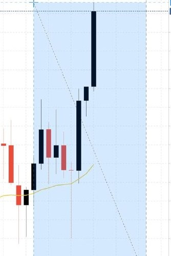

MARKET XAUUSD, GOLDFOCUS CAPITAL PROTECTION · DISCIPLINESIGNALS POSTED LIVE ON TELEGRAMJOURNAL MARKET REVIEW, OPERATE, DON'T GAMBLE
Run it like a business
How to Review the Trend Like a Business Owner, Not a Gambler
A gambler hunts thrills on the 1-minute chart. An operator runs a calm, scheduled review, names the trend, marks structure, writes an IF-THEN plan, then closes the laptop.
By Rex · XAUUSD · 9 min read
Rex · @REXTradingSignal · 11.9K followers
A gambler and a business owner can be looking at the exact same gold chart and see two completely different things. One sees a slot machine. The other sees a set of numbers to review before deciding anything. Same screen. Two different lives.
Picture the gambler first. He's got the 1-minute chart open. Every candle is a heartbeat. Price ticks up, he feels great. Price ticks down, his stomach drops. He's not analyzing anything, he's reacting to noise, hunting for a hit of adrenaline. He'll tell you he's "watching the market." He's really just watching his own emotions bounce around a screen.
Now picture the operator. Same gold, same day. He sits down for fifteen quiet minutes, higher timeframe up. He asks three boring questions, what's the trend, what's the structure, what would I do IF price does X, writes down the answers, and closes the laptop. No thrill, no stomach drop. Just a review, the way you'd review your numbers before the week starts. I've been both of those people, so let me show you how to do the second one on purpose.

A calm market review starts by naming the trend on the gold (XAU/USD) chart, before you form a single opinion.
Why a market review beats staring at the screen
Before I ever touched a trade, I ran a business for five years. And in a business, you don't make decisions by staring at the cash register all day hoping to feel something. You review. You look at last week's numbers, you look at where things are trending, you make a plan for the week, and then you go do the work.
Trading gold is no different, once you strip out the drama. The chart is your set of numbers. A market review is you sitting down to read those numbers calmly, on a schedule, before you form an opinion, not while your money is on the line and your pulse is up.
Here's the trap I fell into for years, and it cost me four blown accounts. I confused watching with working. I thought that because I was staring at price all day, I was being diligent. I wasn't, I was gambling with extra steps. A business owner doesn't confuse activity with progress. Neither should you.
A bet asks, "Will I win this one?" A business asks, "Can I still open tomorrow?"
That one line reorganized how I look at a chart. When you're asking "will I win this one," every candle matters and every tick is a crisis. When you're asking "can I still open tomorrow," you zoom out. You stop caring about the next five minutes and start caring about whether your process is sound enough to run for years. The review is how you keep the doors open.
Pull up the chart and name the trend first
Pull up a chart like the one above and do the boring thing first: name the trend before you form an opinion. Not "I think it's going up because I want it to." Name it based on what the chart is actually showing you.
The simplest, most honest way to read the trend is structure, the pattern of highs and lows. If price keeps making higher highs and higher lows, that's an uptrend; the market is generally being bid up. If it keeps making lower highs and lower lows, that's a downtrend. If it's bouncing between a rough ceiling and a rough floor without going anywhere, that's a range, and a range is a real answer, not a failure to find one.
That's it. You're not predicting. You're describing. A business owner reviewing last quarter doesn't say "sales feel like they'll explode", she says "revenue is up three months running" or "we've been flat since spring." Describe what is, not what you hope. The trend has a name; your job in the review is just to say it out loud honestly.
And here's the discipline part: sometimes the honest answer is "I don't have a clean read." A range with messy, overlapping candles is the market telling you it hasn't decided. Writing down "unclear, stand aside" is a legitimate, professional outcome of a review. It is not you being lazy. It's you refusing to force a trade out of a chart that isn't offering one.
Read gold's trend on the higher timeframe, not the 1-minute
The single biggest upgrade for most people reviewing a gold chart is simple: zoom out. The lower the timeframe, the more noise and the less meaning. On the 1-minute, gold looks like it changes its mind every thirty seconds. On a higher timeframe, the daily, the 4-hour, you can actually see the shape of the thing.
Think of it like your business again. You don't judge whether the company is healthy by watching one hour's sales on a slow Tuesday afternoon, you'd panic for no reason. You look at the week, the month, the quarter, and the small stuff stops looking like emergencies. The higher timeframe is your quarter. It sets the context every lower-timeframe wiggle lives inside.
So start your review at the top. Establish the higher-timeframe context first, and let that frame everything else. When your context and your lower timeframe agree, you have a cleaner read. When they fight each other, that's your signal to slow down, not speed up.
The 1-minute chart doesn't make you fast. It makes you anxious. There's a difference.
Mark the structure and the levels that matter
Once you've named the trend, mark the map. This is the part that turns a vague feeling into an actual plan.
Find the obvious levels, the areas where price has clearly turned around more than once. The rough floors where buyers have shown up before. The rough ceilings where sellers have leaned in before. You're not drawing dozens of lines and turning the chart into spaghetti. You're marking the two or three zones that obviously mattered to the market, because those are the areas where something is likely to happen again, a reaction, a pause, a decision point.
This is inventory work. In my old business, I knew which shelves emptied fast and which products just sat there. I didn't guess, I marked it, because knowing where the action tends to happen is how you plan your week. On a chart, key levels are your shelves. They tell you where price tends to react, so you know which areas deserve your attention and which are just empty space in between. Keep it clean: two or three levels that genuinely matter beat twenty that don't.
Write your IF-THEN plan, then close the laptop
Here's what separates an operator from a gambler more than anything else: the operator decides what he'll do before it happens, in writing, while he's calm.
The format is simple. IF price does this at that level, THEN this is the kind of thing I'd consider, and here's exactly where I would stand aside and do nothing. Notice that "do nothing" is half the plan. A real review defines the situations you'll skip just as clearly as the ones you'd act on. Most of the chart, most of the time, is a stand-aside. That's normal. That's solvency.
Writing it down does something to your brain. The plan gets made by calm-you, the version that just spent fifteen minutes reviewing quietly. Then when the market moves and your pulse jumps, you don't have to think, you just check price against the plan calm-you already wrote. You've taken the decision away from panic-you, who has blown up more accounts than any market ever did. Mine included.
And every plan I write has a line for where I'm wrong. That's not pessimism, it's how a business survives. You cap the downside so no single bad call can close the whole shop. In practice that means a stop loss on every position, no exceptions, defined before you're in.
Then, and this is the part nobody wants to hear, you close the laptop. The review is done. The plan is written. Sitting there watching every candle after you've made your plan doesn't add information; it just gives your worst instincts more chances to override your best thinking. Run the review, write the plan, walk away. Come back at your next scheduled review.
Your market-review routine, run it, don't wing it
STEP 01
Set the context on the higher timeframe
Start at the top, not the 1-minute. Open the daily or 4-hour first and read the bigger shape gold is in. This is your quarter, it frames every smaller move. Everything below this step lives inside the context you set here.
STEP 02
Name the trend honestly
Higher highs and higher lows is an uptrend. Lower highs and lower lows is a downtrend. Going sideways between a rough ceiling and floor is a range. Describe what the chart shows, not what you hope. "Unclear, stand aside" is a valid answer.
STEP 03
Mark structure and key levels
Draw the two or three zones that obviously mattered, the floors buyers defended, the ceilings sellers leaned on. These are your shelves: the areas where price tends to react. Keep it clean. If you can't read the chart, you've drawn too much.
STEP 04
Write your IF-THEN plan and where you'll stand aside
IF price does X at level Y, THEN this is what I'd consider, and here is exactly where I'll do nothing. Define the skips as clearly as the setups, put a line for where you're wrong on every idea, then close the laptop and wait for your next review.
Analysis is reading the chart. Impulse is trading every candle.
Let me draw the line hard, because this is the whole game. Analysis and impulse are not the same activity, and confusing them is what wrecks accounts. Analysis is what you do in the review: it's calm, it's scheduled, it produces a written plan, and crucially, it's separate from acting. You can analyze a chart perfectly and take zero trades that day. That's a good day. That's an operator running his numbers and concluding the smart move is to wait.
Impulse is the opposite. Impulse is what happens when the chart is open, your plan is nowhere in sight, and a candle moves in a way that feels urgent. Impulse doesn't ask "does this fit my plan?" It asks "what if I miss out?" That's not analysis. That's the gambler's itch wearing a trader's clothes.
The fix isn't more willpower. It's structure. Separate the two in time. Do your analysis on a schedule, in a calm window, away from the pressure of a live position. Let the review produce the plan. Then let the plan, not the next candle, decide whether you act. When analysis and action live in the same anxious moment, impulse always wins. When you separate them, discipline gets a fighting chance.
Free one-page trading business plan
Grab the free one-page plan: a risk ceiling, a simple journal layout, and the three questions to ask every night. One email, no spam, unsubscribe anytime.
How often should I review the gold chart? On a schedule that fits your life, not constantly. For most people, a proper review once a day, or even once at the start of the week plus a quick check each morning, is plenty. The goal is a calm, repeatable routine, not a screen you never look away from. Reviewing more often doesn't make you more informed; past a point it just makes you more reactive.
How do I read the trend as a beginner? Start with structure and nothing else. Look at the pattern of highs and lows: higher highs and higher lows is an uptrend, lower highs and lower lows is a downtrend, and sideways chop between a rough ceiling and floor is a range. Don't add indicators until you can name the trend from structure alone. Describe what you see rather than predicting what you want, that habit is worth more than any tool.
Should I watch the 1-minute chart? As a beginner, I'd stay off it. The 1-minute is mostly noise, and it pulls you into reacting to every tick instead of reading the actual trend. Do your real analysis on higher timeframes where the shape is clear, and let those set your context. The 1-minute doesn't make you faster or sharper, it usually just makes you anxious.
What's the difference between analysis and a signal? Analysis is the process of reading a chart yourself, naming the trend, marking structure, building your own plan, so you understand what you're looking at. A signal is someone handing you a specific instruction. This article is analysis: it's teaching you how to review, not telling you what to trade. Learn to run the review yourself, and you're never fully dependent on anyone else's opinion.
About Rex
I ran a business for five years before I ever opened a trading account, so I came in thinking like an owner, and then promptly forgot everything I knew. I got sold the dream: fixed returns, zero risk, easy money. I believed it, traded like a gambler, and blew four accounts learning that "risk-free" is the most expensive phrase in this industry. Nobody was going to hand me discipline, so I had to rebuild it myself, from the same business principles I'd used before: review your numbers, make a plan, cap your downside, and stay solvent long enough to keep going.
Now I share how I operate with around 11,900 people, under three rules I don't break. Every signal I post has a stop loss. I post my losers, not just my winners. And I never promise profit, because anyone who does is selling you the exact dream that cost me four accounts. If that kind of honesty is what you're after, you're in the right place.
A Word on Risk
Trading gold and other leveraged instruments carries a real risk of losing money, and many people who try it do lose. Nothing in this article is a signal, a recommendation, or financial advice, it's education about a review process, and the trend, structure, and growth examples here are illustrative only, not predictions or promises of any result. Markets can move against any plan, no matter how well thought out. Only ever risk money you can genuinely afford to lose, consider speaking with a licensed financial professional about your own situation, and remember that the goal isn't to win the next trade, it's to run a process disciplined enough that you can keep operating tomorrow.
If you want to see what this looks like day to day, honest reviews, losers included, no hype, come find me here: REX Trading Signal on Telegram.
Watch how I trade the losses, not just the wins.
Daily XAUUSD setups with a stop loss, a reason, and a rule, posted live on Telegram, wins and losses alike.